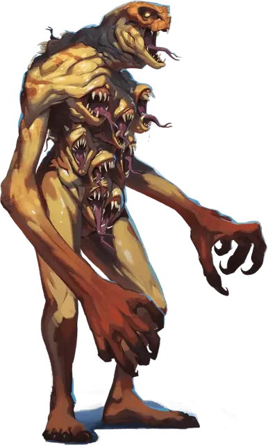

Эорский изничтожитель
Aeorian Nullifier
Большой Монстр, нейтрально-злой

Класс Доспеха 17 (природный доспех)
Хиты 180 (19к10 + 76)
Скорость 40 футов
| мод | спас | ||
|---|---|---|---|
| СИЛ | 19 | +4 | +4 |
| ЛОВ | 14 | +2 | +2 |
| ТЕЛ | 18 | +4 | +4 |
| мод | спас | ||
|---|---|---|---|
| ИНТ | 7 | −2 | −2 |
| МДР | 14 | +2 | +6 |
| ХАР | 18 | +4 | +8 |
Навыки Восприятие +6, Выживание +6
Иммунитет к урону излучение, некротическая энергия
Чувства тёмное зрение 120 футов, пассивное Восприятие 16
Языки понимает Драконий, но не говорит на нём
Опасность 12 (8400 опыта)
Бонус мастерства +4
Особенности
Ужасающий скрежет. Рты изничтожителя бессвязно скрежещут, пока он может видеть каких-либо врагов. Каждое существо, которое начинает свой ход в пределах 20 футов от изничтожителя и может его услышать, должно совершить спасбросок Мудрости Сл 16. Если спасбросок провален, то существо бросает к8, чтобы определить, что оно делает во время текущего хода:
• 1-4: Существо ошеломленно до конца своего хода.
• 5-6: Существо испуганно до конца своего хода и использует своё движение, чтобы уйти как можно дальше от изничтожителя.
• 7-8: Существо не двигается, и оно использует свое действие, чтобы совершить одну рукопашную атаку по случайному существу (кроме себя самого), если оно находится в пределах досягаемости. В противном случае оно ничего не делает.
Врождённое колдовство. Базовой характеристикой изничтожителя является Харизма (Сл спасброска от заклинания 16). Он может накладывать следующие заклинания, не нуждаясь в материальных компонентах:
• Неограниченно: контрзаклинание [counterspell] (см. "Реакции" ниже), обнаружение магии [detect magic], рассеивание магии [dispel magic], видение невидимого [see invisibility];
• 1/день: преграда магии [antimagic field].
Сопротивление магии. Изничтожитель совершает с преимуществом спасброски от заклинаний и прочих магических эффектов.
Действия
Мультиатака. Изничтожитель совершает три атаки: одну Укусом и две Когтями.
Укус. . Рукопашная атака оружием: +8 к попаданию, досягаемость 5 футов, одно существо. Попадание: 17 (2к12 + 4) колющего урона плюс 11 (2к10) урона силовым полем.
Когти. . Рукопашная атака оружием: +8 к попаданию, досягаемость 10 футов, одна цель. Попадание: 11 (2к6 + 4) рубящего урона плюс 11 (2к10) урона силовым полем, и если целью является существо, то оно схвачено (Сл высвобождения 16). Изничтожитель имеет два когтя и каждый из них может удерживать одно существо.
Реакции
Контрзаклинание. Изничтожитель пытаетесь прервать процесс накладывания заклинания существом, которое он может видеть в пределах 60 футов. Если существо накладывает заклинание 3-го уровня или ниже, его заклинание проваливается, и не оказывает никакого эффекта. Если оно накладывало заклинание 4-го уровня или выше, изничтожитель совершает проверку Харизмы. Сл равна 10 + уровень заклинания. В случае успеха заклинание проваливается и не оказывает никакого эффекта.
Описание
Изничтожители — это проклятие всех пользователей магии, их физические формы и врождённые особенности сформированы специально для того, чтобы противостоять и отменять магические эффекты. Против других врагов уничтожитель не менее страшен из-за гротескных пастей, наполненных острыми как бритва клыками, которые покрывают его туловище — и которые создают какофонию скрежета, который может свести с ума других существ.
Эорские охотники
Призванный к жизни магами в летающем городе Эор в Эпоху Аркана, эорские охотники были созданы для борьбы с ангелами, демонами, дьяволами, феями и самими богами. Когда Эор врезался в Эйзелкросс, многие из этих магически мутировавших монстров выжили, и теперь они бродят по руинам Эора и ледяным пустошам островов.
Созданные путём экспериментов. Эорские охотники были созданы путем тайных экспериментов на животных и гуманоидах — как пленниках, так и добровольцах. Эти эксперименты привели к появлению чудовищ с ярко окрашенной плотью и способностью противостоять врагам Эора и уничтожать их. Существует теория, что маги Эора, должно быть, обладали каким-то средством управления своими монструозными солдатами, но в пустошах Эйзелкросса такого устройства пока не найдено. Драконий был языком, который эти маги использовали для обучения и подчинения эорских охотников, и охотники сохраняют понимание этого языка, даже если они не могут на нем говорить.
Безумие через бессмертие. Эорские охотники не стареют. Таким образом, жажда насилия, которую их создатели вселили в их умы, стала ненасытной после столетий без войн. Большинство немедленно нападают на любое существо, которое они видят.
Никогда не причиняй вреда другому охотнику. Хотя они жаждут насилия, эорские охотники никогда не нападали друг на друга. Большинство ученых полагают, что маги Эора, должно быть, привили им такое поведение, учитывая стоимость золота и магии, необходимую для создания каждого охотника. Некоторые искатели приключений в Эйзелкроссе хвастаются тем, что пробираются мимо эорских охотников, используя маскировку или иллюзии, чтобы имитировать внешность охотника, но это, скорее всего, небылицы.
Бессмертные воспоминания. Каждый эорский охотник прекрасно помнит всё с момента его создания. Их ограниченный интеллект и стремление к насилию мешают им эффективно общаться, но каждый охотник хранит в своем сознании огромное количество знаний, часто включая местонахождение редких эорских реликвий.
Идеальные солдаты. Эорским охотникам не нужны ни еда, ни питье.